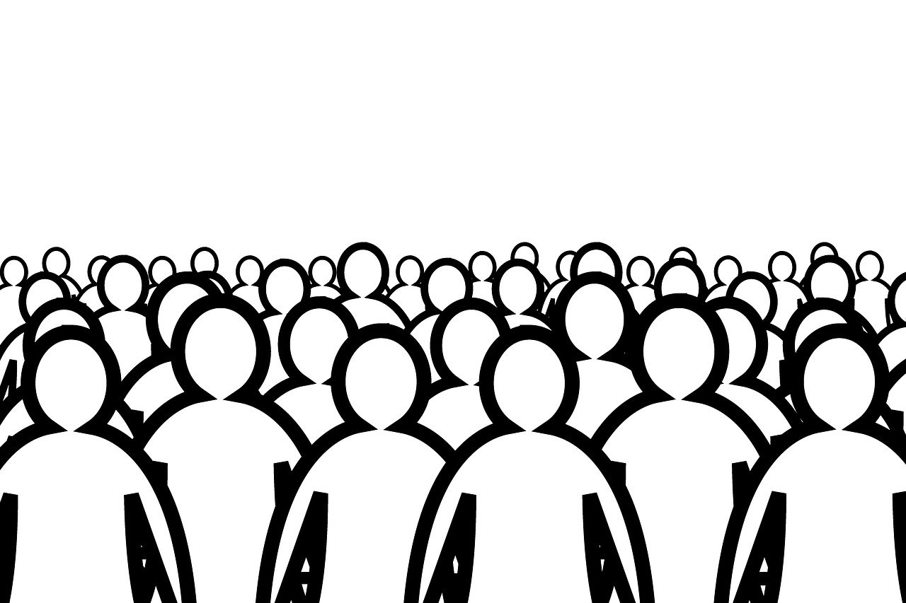

Gatilho Aprovação Social
Esse artigo abordará o gatilho da aprovação social, explicando seu funcionamento, a relação entre aprovação social e o efeito espectador e exemplos de como aplicar o gatilho na prática.
Portanto os tópicos desse artigo serão:
- Entendendo o gatilho
- Efeito espectador
- Como usar o gatilho
Entendendo o gatilho:
O gatilho da aprovação social é um princípio psicológico usado no copywriting para influenciar o comportamento das pessoas, aproveitando seu desejo de se encaixar e ser aceito por um grupo social. Esse gatilho baseia-se na ideia de que as pessoas tendem a se espelhar nas ações, opiniões e comportamentos dos outros, principalmente quando estão incertas sobre o que fazer.
No vídeo apresentado no início do artigo, utilizam o gatilho para reforçar a ideia de que a vítima da pesquisa está invisível. As pessoas no parque são atores contratados e agem como se a pessoa realmente tivesse desaparecido. O comportamento em grupo ajuda a vender a ideia de o que está acontecendo é real. Pegadinhas as vezes usam esse gatilho para deixar mais crível a situação criada por ela.
Em campanhas publicitárias e estratégias de marketing, o gatilho pode ser usado criando um senso de pertencimento em relação a determinado produto ou serviço. Assim estimulando a réplica de comportamentos ou opiniões, influenciando assim nas escolhas e decisões dos consumidores. Um uso muito comum é mostrar avaliações de produtos que estão sendo bem recebidos pelo público, a avaliação positiva pode ser determinante no processo de decisão do consumidor que pode querer fazer parte desse grupo de consumidores satisfeitos. Outras formas de utilizar o artigo serão mencionadas no fim do artigo.
Efeito espectador
O efeito espectador (também chamado de síndrome do espectador ou apatia do espectador) é um conceito da psicologia que descreve a tendência das pessoas de não intervirem ou ajudarem em emergências quando estão em grupos grandes. O problema é causado porque as pessoas acreditam que outra pessoa tomará a iniciativa de ajudar, tornando todos passivos diante da situação. O fenômeno ganhou destaque na psicologia após o assassinato de "O Assassinato de Kitty Genovese". Na década de 1960 Kitty foi assassinada e várias testemunhas observaram da janela ou ouviram os gritos sem tomar qualquer ação, como por exemplo ligar para a polícia.
Mas afinal o que isso tem a ver com a aprovação social? Existem diversos fatores que podem contribuir para o efeito espectador. Fatores como a difusão da responsabilidade entre os espectadores, diminuindo o senso de urgência da situação, o medo do julgamento social, a falta de informações sobre a gravidade da situação e a conformidade social. A conformidade social atua de forma muito semelhante a aprovação social, no qual diz que as pessoas têm uma tendência natural de se conformar com as ações e comportamentos dos outros ao seu redor e inibindo qualquer ação com medo de ser visto como inconveniente ou estranho. Caso você tenha interesse em saber mais, clique aqui.
Como usar o gatilho:
Escute o spot abaixo e depois leia algumas formas de utilizar o gatilho. Você consegue notar a utilização de alguns deles na propaganda?
Depoimentos e avaliações: Coloque depoimentos e avaliações positivas de seu produto/serviço nas plataformas utilizadas para divulgar seu serviço. Isso demonstrará um grupo de pessoas teve uma experiência positiva e pode estimular o gatilho.
Use evidências de aceitação em massa: Utilize números que demonstrem a quantidade de consumidores do produto. Frases como “Junte-se aos milhares de clientes satisfeitos” ou “Mais de 5.000 clientes satisfeitos” podem utilizar o gatilho ao indicar que existe um grupo de consumidores aproveitando
Crie sentimento de comunidade: Fale com o público de uma forma que passe a ideia de união. Para isso você pode utilizar hashtags e termos do fandon. Ao fazer isso, você se comunica diretamente com os fãs, dessa forma você mostra para os consumidores que a empresa está acompanhando a opinião deles pelas redes sociais. Isso reforça a aprovação social, pois os consumidores se sentem parte de algo maior e pode estimular outras pessoas a quererem fazer parte dessa comunidade. Outra possibilidade é utilizar datas comemorativas, como por exemplo o Dia das Mães. Nesse caso sua propaganda vai ser direcionado a grupo/comunidade em específico: As mães.
Utilize dados (estatísticas e pesquisas): Mostre dados ou ideias que indiquem a aceitação do produto/serviço por muitas pessoas. Por exemplo A escolha número 1 entre especialistas
ou algo como Compre as roupas da moda
.